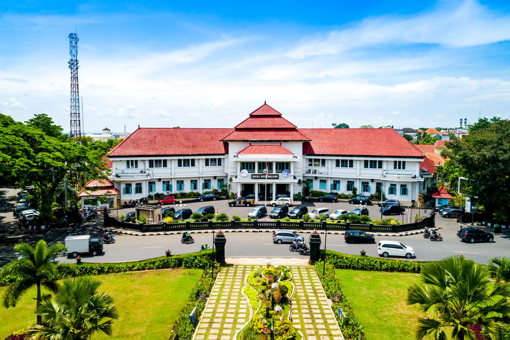

Informasi umum tentang kota

Kota Malang adalah kota terbesar kedua di Jawa Timur setelah Surabaya yang terkenal dengan iklim sejuk dan keindahan alamnya. Malang juga dikenal sebagai kota pendidikan dengan banyak universitas ternama seperti Universitas Brawijaya, Universitas Negeri Malang, Universitas Muhammadiyah Malang dan masih banyak universitas lainnya.
Terletak di jawa Timur, dengan akses yang mudah ke berbagai daerah di sekitarnya serta infrastruktur yang memadai untuk mendukung pembangunan dan perekonomian di Indonesia.
Mayoritas penduduk di kota malang merupakan mahasiswa dan tenaga kerja di sektor pendidikan yang aktif dan produktif serta memiliki keterampilan yang dibutuhkan di dunia kerja.
Kota Malang memiliki potensi di bidang pertanian, wisata alam, dan UMKM yang dapat dikembangkan serta dimanfaatkan untuk pembangunan ekonomi daerah agar menjadikan kota ini sebagai pusat pengembangan ekonomi yang berkelanjutan.